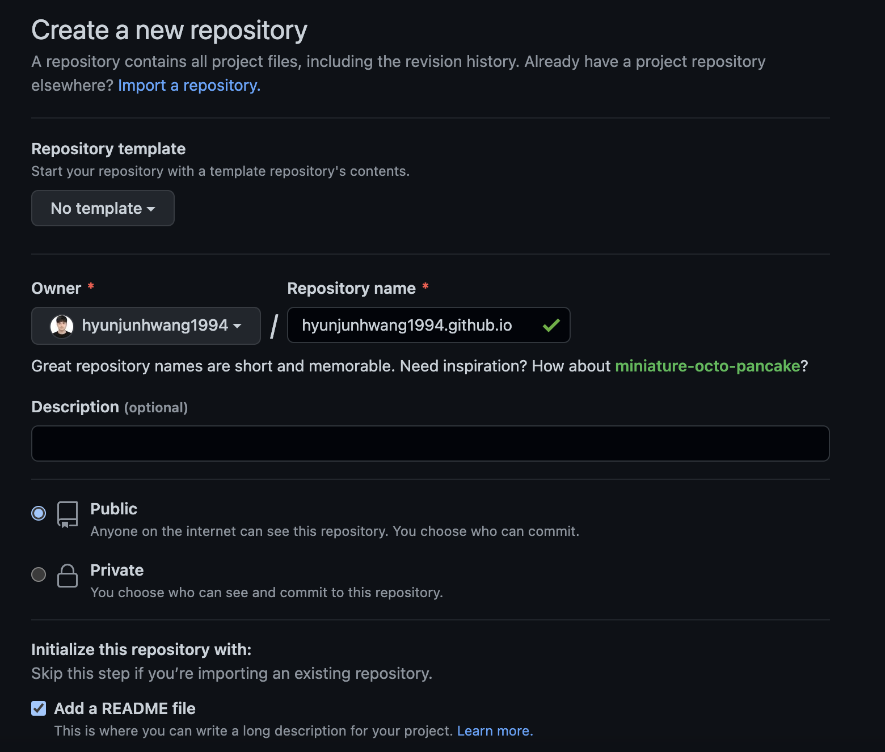
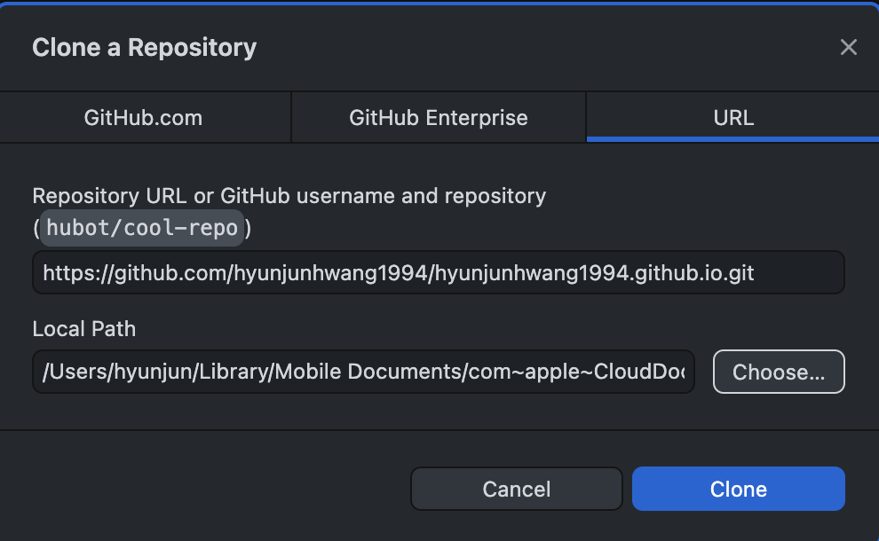
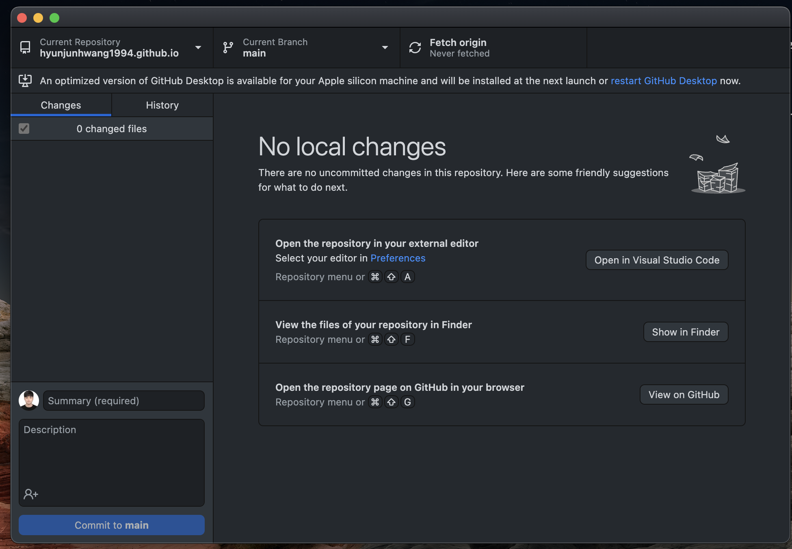
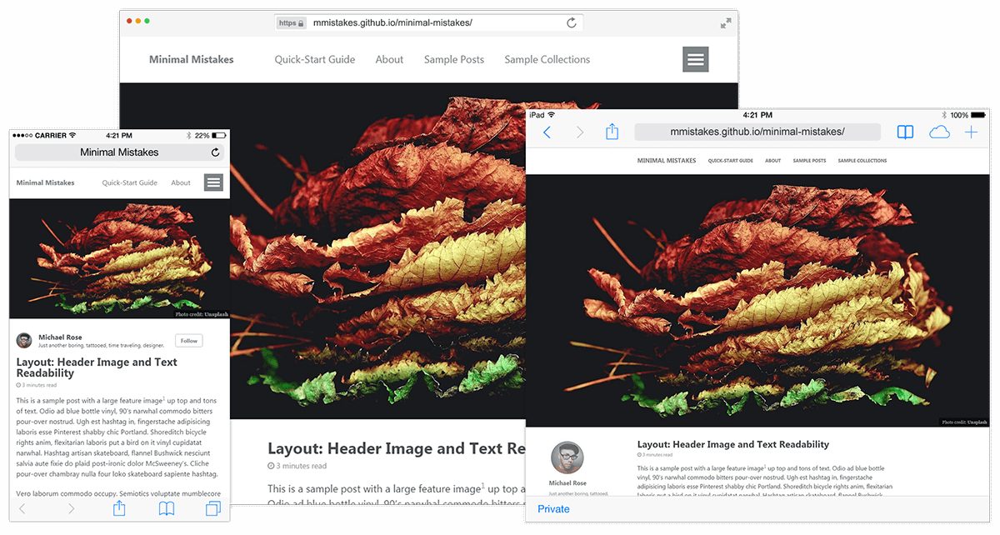
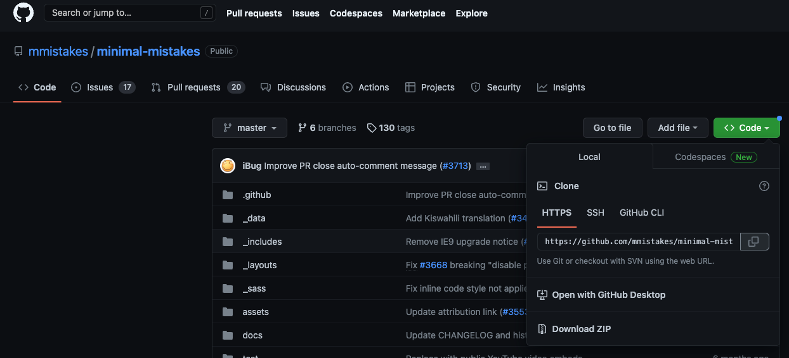
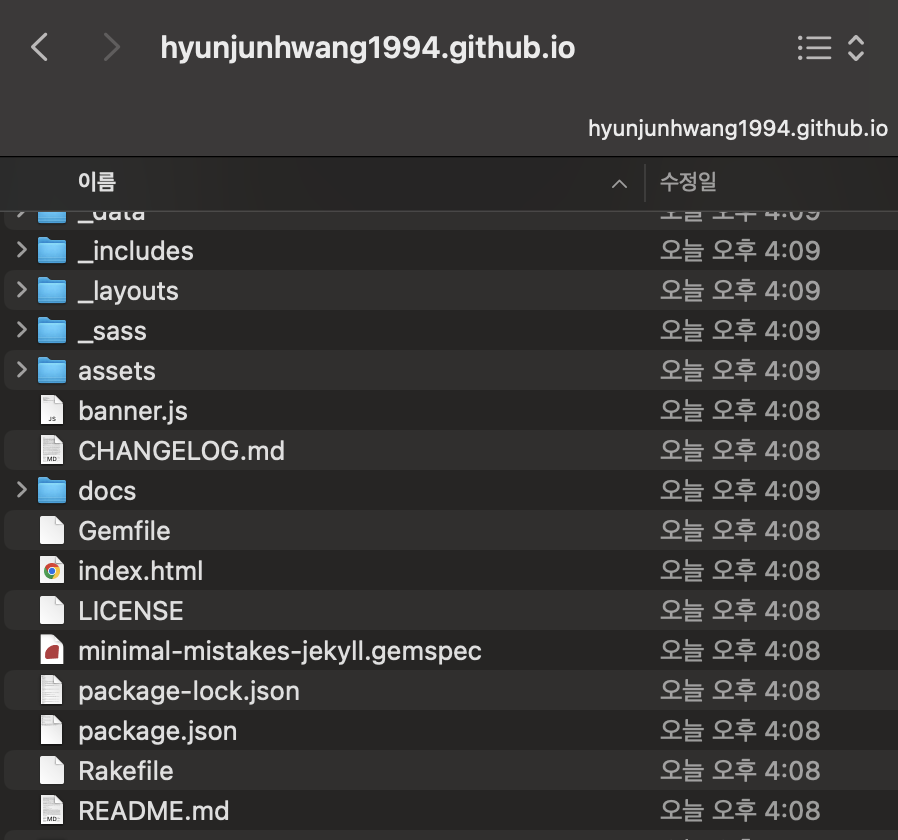
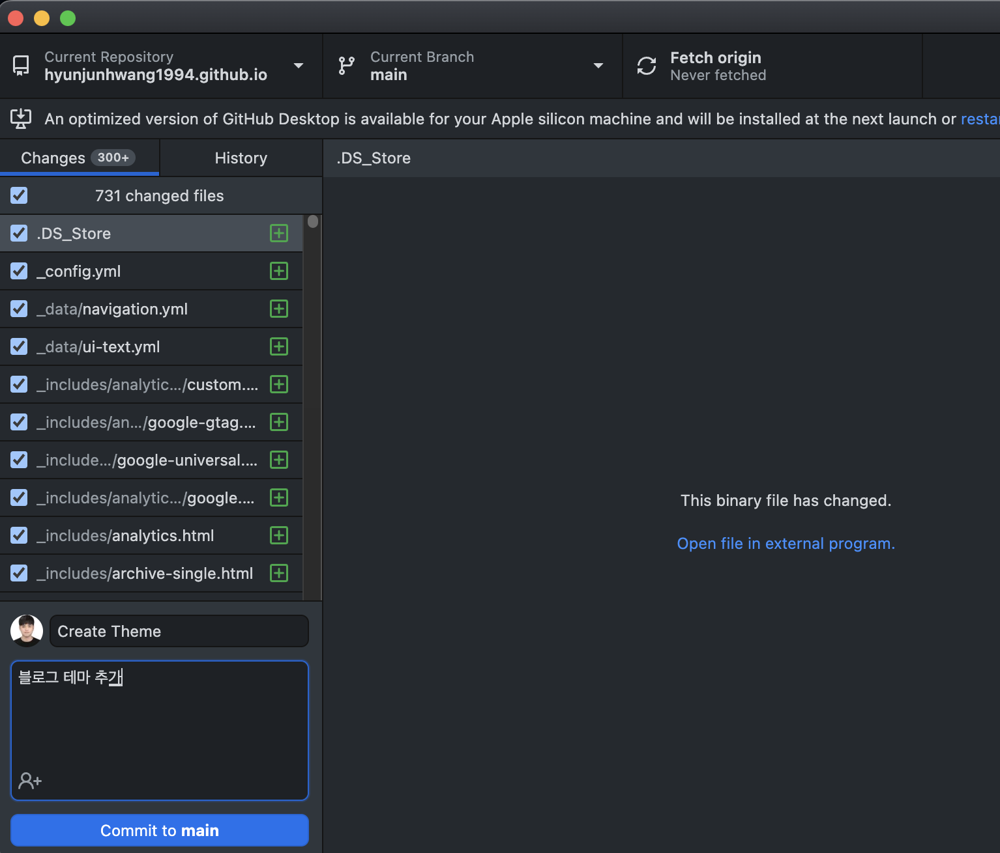
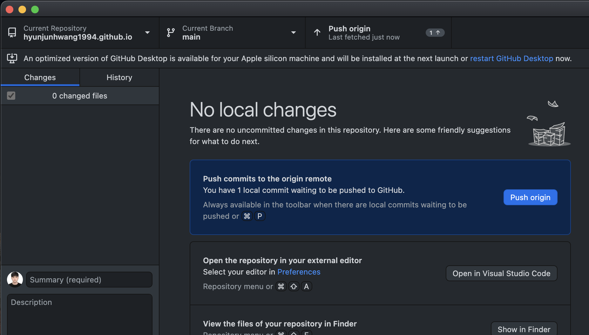
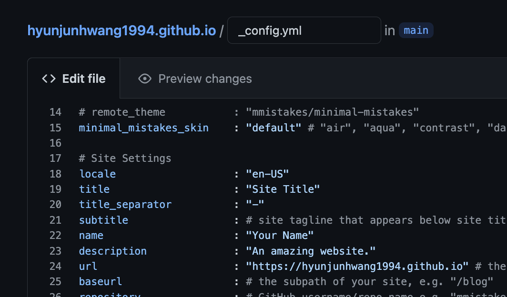
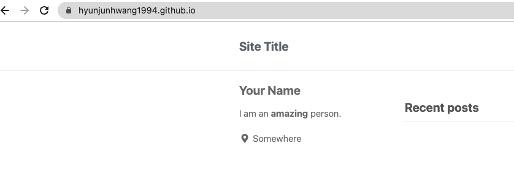

1 맥북 M1 개발자, 깃허브 블로그 포트폴리오 만들기
시작 전, 깃허브 계정을 만들어주세요.
repositories에 들어가서 자신의 블로그로 사용할 레파지토리를 만듭니다.
Repositroy name은 꼭 깃허브계정.github.io로 만들어주세요 ( 본인의 블로그 주소입니다. )

다른 지킬 테마를 fork로 가저오면서 레파지토리를 만들면 편하지만, 그럴 경우 커밋과 같은 과정에서 잔디가 심어지지 않아요ㅜㅜ 그렇기 때문에 이와 같이 직접 테마를 넣어줘야 합니다.
일단 깃허브 데스크탑 깔아주세요 (터미널은 나중에 사용) https://desktop.github.com/
Your Repositories에서 방금만든 레파지토리를 가저옵니다.
.png)
초이스를 눌러 원하는 위치에 Clone해주세요.

이런 창이 뜨면 성공입니다.

테마는 현재 저도 사용중인 미니멀 미스테이크라는 테마를 이용해보겠습니다

접속! https://github.com/mmistakes/minimal-mistakes
이게 현재 사용하고자하는 테마의 깃허브입니다. Download ZIP으로 다운받아주세요.

그다음 우리가 좀전에 클론해온 username.github.io 폴더로 minimal-mistakes 안에 있는 파일들 전부 넣어주세요. README.md파일은 교체해주세요
그럼 대략 아래와 같이 됩니다.

다시 깃허브 데스크탑으로가면 저절로 우리의 레파지토리에 추가된 내용이나옵니다. 적당한 멘트써서 Commit to main 클릭!

—그런후 Push origin 버튼을 클릭해주세요 ( Push를 해야 최종적으로 깃허브 네트워크에 올라갑니다. )

마지막으로, 그 후, _config.yml파일을 찾으셔서 url 부분을 자신의 깃허브주소(예시)처럼 바꿔주신후 커밋해주세요.

그런후 자신의 아이디.github.io 에 접속하면?

요약
- 깃허브 레파지토리를 자신의 아이디.github.io 로 만든다.
- 깃허브 데스크탑으로 자신이 원하는 로컬 폴더에 레파지토리를 clone 해온다.
- 원하는 테마를 찾아 ZIP으로 설치후 자신의 레파지토리에 전부 붙혀넣는다.
- 깃허브 데스크탑으로 수정된내용을 commit, push 한다.(최종적용)
- 깃허브 블로그 주소로 접속해본다.
짜잔 블로그 완성입니다. 설정및 다른 기능들은 차차 기술 하겠습니다.